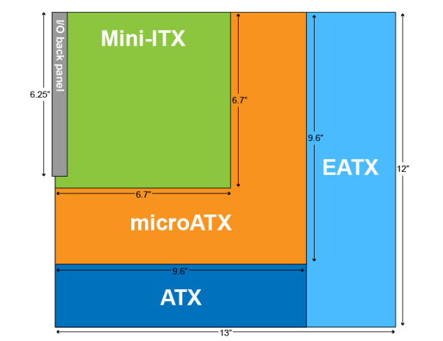

Components
Cases and Form Factors
Introduction
Motherboard form factor standards help ensure that computer components can be interchangeable among vendors and generations of technology. Knowledge of the form factors are important when you customize and upgrade systems.
Form factors evolve slowly in response to changing demands of the computer market. The following graphic and table describe the characteristics of the most common motherboard form factors.
What Determines a Form Factor?
- Dimensions
- Power supply type
- Mounting hole locations
- Number of expansion slots
- Back panel layout
Common Form Factors and their Characteristics
ATX (Advanced Technology Extended)
The ATX form factor is the most used form factor. Because of its popularity, there are several versions of the ATX form factor. Each version has a different specification for dimension and number of expansion slots.
All ATX versions share the following characteristics:
- Back plate measurements (6.25" × 1.75")
- 24-pin ATX power connector
- On/off switch runs from case to motherboard
- Soft-power control (OS can turn computer off)
- Expansion slot spacing (0.8" between slots)
- Standardized mounting hole locations
- CPU location (top of board near power supply)
The different versions include:
Standard ATX
- Measures 12" × 9.6"
- Up to seven expansion slots
- Between six and nine mounting holes
Extended ATX (EATX)
- Measures 12" × 13"
- Extra space for additional memory slots
microATX
- Measures 9.6" × 9.6"
- Four expansion slots
- Compatible with ATX cases
Information Technology EXtended (ITX)
The ITX form factor was designed for low-power, small form factor (SFF) computers. The most common ITX form factor is the Mini-ITX form factor.
Mini-ITX form factor:
- Specifies a maximum motherboard size of 6.7" × 6.7"
- Has only one expansion slot
- Allows for small (100 watt) power supplies
- Is typically used with a home theater PC (HTPC)
Other ITX form factors include the following:
- SNano-ITX (4.7" × 4.7")
- Pico-ITX (3.9" × 2.85")
- Mobile-ITX (2.9" × 1.7")
New Low Profile Extended (NLX)
NLX is an old form factor that was designed for use in slimline desktop computers.
NLX form factor:
- Uses a detachable riser card to provide expansion slots (the motherboard itself has no expansion slots)
- Allows the motherboard to slide in or out of the system case easily
- Was replaced by microATX and Mini-ITX
Balanced Technology eXtended(BTX)
The BTX form factor was designed as a replacement for the ATX form factor. It did not gain widespread adoption.
BTX Form Factor:
- The CPU is positioned in such a way that air flow is increased.
- There is no heatsink fan. Instead, a thermal module or shroud fits over the CPU to move heat directly out of the system.
- The back panel orientation and mounting location is reversed.
Computer Cases
ATX Full-Tower
Largest computer cases with extensive space for components.
- Standard ATX
- EATX
- microATX
- Maximum expansion capability
- Multiple drive bays
ATX Mid-Tower
Most common case type with balanced size.
- Standard ATX
- microATX
- Mini-ITX
- Some EATX support
- Fewer external/internal bays
microATX Tower
Desktop-oriented cases:
- microATX compatibility
- Mini-ITX compatibility
- Usually one drive bay
- Available in slim design
Mini-ITX Tower
Compact cases for Mini-ITX boards
- Smaller than microATX towers
- Space-efficient design
Home theatre PC (HTPC)
Media center focused:
- Designed for TV connection
- microATX compatible
- Mini-ITX compatible
Notebook
Laptop specific:
- Proprietary designs
- Model-specific variations
Case Components
Standard Included Components
- Computer case.
- Power supply (sometimes sold separately).
- Case fans.
- Plastic or rubber feet that attach to the bottom of the case.
- Mounting screws and standoffs.
- Additional external connectors (such as audio, USB, and FireWire) that connect to motherboard headers.